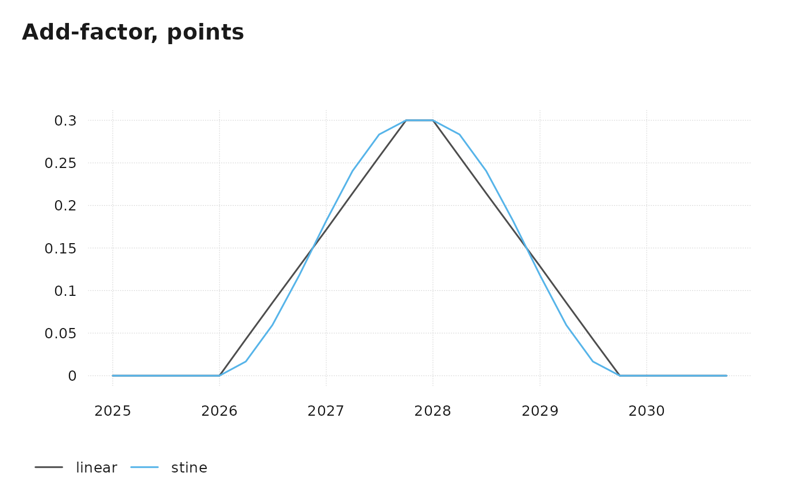

Building a forecast
forecasting.RmdA series’ history ends at its last observation. Forecasting it means filling in the values from there to the end of the bank, from assumptions about how it will grow or where it will be at certain dates. fcutils calls this extending the series.
This article takes the Hawaii payroll jobs in
quarterly_data_example, whose history ends in 2025Q1, and
extends them to 2035 with extend(), addf(),
disagg() and chain(), then averages the result
to years with agg(). The assumptions are made up for the
example. If the bank or the series names are new to you, read Getting started first.
library(fcutils)
options(
fcutils.bnk_start = as.Date("1998-01-01"),
fcutils.bnk_end = as.Date("2035-12-31")
)
q <- conv_xts(quarterly_data_example)
jobs <- q$E_NF_HIEvery series that extend() and addf()
return runs from the bank start to the bank end, so results line up with
each other and with the bank. Before the last observation they hold the
history; after it, the forecast.
Which function
Each step below continues a series from something we know or assume about its future. The form of that knowledge picks the function:
| What we know about the future | Function |
|---|---|
| Levels at some dates | extend(type = "level") |
| Growth rates at some dates, or a growth path, annualized or year over year | extend(type = "growth", growth = "pca" or "pcy") |
| Another series’ path, such as a projection, for one series | extend(type = "chain", method = "ratio" or "diff") |
| Two sources of the same data to join, many series at once, or a series to extend back in time | chain() |
extend() forecasts one series and returns it on the
bank. chain() joins data and keeps the span of its inputs.
Both use “ratio” to continue with growth (levels) and “diff” to continue
with changes in points (rates).
Growth through anchors
An anchor is a target value at a date. With
type = "growth", the anchors are growth rates, and they are
annualized: the growth over one quarter, compounded over four
quarters, so that 1.2 means a pace of 1.2% a year. extend()
draws a straight line between the last observed growth rate and the
first anchor, and between each anchor and the next. It holds the last
anchor to the end of the bank. The level then grows from the last
observation at those rates.
Total jobs grew at an annualized 2.9% in 2025Q1. Here growth slows to 1.2% by 2025Q4 and to 0.8% by 2027Q4:
jobs_fc <- extend(jobs, 2025.4 ~ 1.2, 2027.4 ~ 0.8, type = "growth")
round(pcmp(jobs_fc, lag = 1, comp_freq = 4)[p(2025.1, 2028.1)], 2)
#> E_NF_HI
#> 2025-01-01 2.92
#> 2025-04-01 2.35
#> 2025-07-01 1.78
#> 2025-10-01 1.20
#> 2026-01-01 1.15
#> 2026-04-01 1.10
#> 2026-07-01 1.05
#> 2026-10-01 1.00
#> 2027-01-01 0.95
#> 2027-04-01 0.90
#> 2027-07-01 0.85
#> 2027-10-01 0.80
#> 2028-01-01 0.80Each anchor is a formula with the date on the left and the value on
the right. A decimal date is a quarter, so 2025.4 is
2025Q4. The same anchors can be written with quoted dates, as a named
vector, or with at and val; all four calls
give the same series:
extend(jobs, "2025Q4" ~ 1.2, "2027Q4" ~ 0.8, type = "growth")
extend(jobs, val = c("2025Q4" = 1.2, "2027Q4" = 0.8), type = "growth")
extend(jobs, at = c(2025.4, 2027.4), val = c(1.2, 0.8), type = "growth")A monthly series needs quoted months ("2026M10" ~ 1.2),
because R reads 2026.10 as 2026.1. Anchors
dated at or before the last observation are dropped, with a message
naming them: history takes precedence.
Growth is often quoted year over year instead, as for CPI inflation.
With growth = "pcy", the anchors are year-over-year rates
and each quarter grows from the same quarter a year earlier:
jobs_yy <- extend(jobs, 2025.4 ~ 1.2, 2027.4 ~ 0.8, type = "growth", growth = "pcy")
round(tsbox::ts_pcy(jobs_yy)[p(2025.1, 2028.1)], 2)
#> value
#> 2025-01-01 1.73
#> 2025-04-01 1.55
#> 2025-07-01 1.38
#> 2025-10-01 1.20
#> 2026-01-01 1.15
#> 2026-04-01 1.10
#> 2026-07-01 1.05
#> 2026-10-01 1.00
#> 2027-01-01 0.95
#> 2027-04-01 0.90
#> 2027-07-01 0.85
#> 2027-10-01 0.80
#> 2028-01-01 0.80Year-over-year growth carries last year’s quarter-to-quarter pattern into the forecast: a quarter that was weak a year ago stays weak relative to its neighbours. Annualized growth gives a smooth path from the last quarter.
A level through anchors
With the default type = "level", the series itself runs
through the anchors. Construction’s share of jobs is 6.08% in 2025Q1.
Here it rises to 6.4% by 2026Q4 and eases to 6.0% by 2029Q4.
interp = "stine" (the Stineman spline) turns smoothly
through the anchors without overshooting them; the default,
"linear", draws straight lines.
share <- 100 * q$ECT_HI / jobs
paths <- tsbox::ts_c(
linear = extend(share, 2026.4 ~ 6.4, 2029.4 ~ 6.0),
stine = extend(share, 2026.4 ~ 6.4, 2029.4 ~ 6.0, interp = "stine")
)
tsbox::ts_plot(paths[p(2022, 2031)], title = "Construction share of jobs, %")
Add-factors from ramps
An add-factor is a series added to a forecast to shift it for a
while. addf() builds one from a table of ramps:
each row is a straight line from from at start
to to at end, and the add-factor is zero
outside the ramps. Overlapping ramps add up. Here a project raises the
construction share by up to 0.3 points over 2026–2029:
ramps <- tibble::tribble(
~start, ~end, ~from, ~to,
2026.1, 2027.4, 0, 0.3,
2028.1, 2029.4, 0.3, 0
)
adj <- addf(ramps, per = "quarter")adj is a quarterly series over the whole bank. Adding it
to the smooth path from the previous section gives the adjusted share.
Side by side:
share_fc <- paths$stine + adj
round(tsbox::ts_c(share = paths$stine, adj = adj, adjusted = share_fc)[p(2025.4, 2030.1)], 3)
#> share adj adjusted
#> 2025-10-01 6.207 0.000 6.207
#> 2026-01-01 6.273 0.000 6.273
#> 2026-04-01 6.333 0.043 6.376
#> 2026-07-01 6.379 0.086 6.464
#> 2026-10-01 6.400 0.129 6.529
#> 2027-01-01 6.397 0.171 6.568
#> 2027-04-01 6.376 0.214 6.590
#> 2027-07-01 6.343 0.257 6.600
#> 2027-10-01 6.300 0.300 6.600
#> 2028-01-01 6.251 0.300 6.551
#> 2028-04-01 6.200 0.257 6.457
#> 2028-07-01 6.149 0.214 6.364
#> 2028-10-01 6.102 0.171 6.274
#> 2029-01-01 6.061 0.129 6.190
#> 2029-04-01 6.029 0.086 6.115
#> 2029-07-01 6.008 0.043 6.051
#> 2029-10-01 6.000 0.000 6.000
#> 2030-01-01 6.000 0.000 6.000The first ramp climbs from 0 in 2026Q1 to 0.3 in 2027Q4, by 0.3 / 7 =
0.043 points a quarter. The second starts at 0.3 in 2028Q1 and falls
back to 0 by 2029Q4, so the adjusted share meets the 6.0 anchor there.
Before 2026Q1 and after 2029Q4, adj is zero.
The dates can also be strings ("2026Q1"), and the same
add-factor can be written as points joined by straight lines:
ramps <- tibble::tribble(
~start, ~end, ~from, ~to,
"2026Q1", "2027Q4", 0, 0.3,
"2028Q1", "2029Q4", 0.3, 0
)
addf(2026.1 ~ 0, 2027.4 ~ 0.3, 2028.1 ~ 0.3, 2029.4 ~ 0)Points also take interp = "stine", which joins them with
a smooth curve that eases off zero and back, like the spline in
extend():
adj_paths <- tsbox::ts_c(
linear = adj,
stine = addf(2026.1 ~ 0, 2027.4 ~ 0.3, 2028.1 ~ 0.3, 2029.4 ~ 0, interp = "stine")
)
tsbox::ts_plot(adj_paths[p(2025, 2030.4)], title = "Add-factor, points")
Construction jobs follow from the adjusted share and the total. Because the share and the total both span the bank, ordinary arithmetic lines them up:
Following a projection
Sometimes the forecast for a series comes from elsewhere, such as a
projection by another agency. Its level may not match UHERO’s history,
for example because it uses a different definition. With
type = "chain", extend() takes only the growth
of the projection, path, and applies it to the series from
its last observation. Suppose an annual projection of government jobs
for 2025–2035:
The history is quarterly, so the projection must be quarterly too.
disagg() interpolates it to quarters whose averages equal
the annual values. Without anything to follow at the end of the series,
the interpolation bends toward zero growth over the last year;
extend_with = "last_growth" prevents that by continuing the
series at its last growth rate before interpolating.
gv_q <- disagg(gv_a, extend_with = "last_growth")
round(tsbox::ts_c(annual = gv_a, quarterly_avg = agg(gv_q))[p(2025, 2027)], 3)
#> annual quarterly_avg
#> 2025-01-01 131.0 131.0
#> 2026-01-01 131.8 131.8
#> 2027-01-01 132.6 132.6extend() then continues the quarterly history with the
growth of the interpolated projection:
gv_fc <- extend(q$EGV_HI, path = gv_q, type = "chain")
gv <- tsbox::ts_c(history = q$EGV_HI, projection = gv_q, forecast = gv_fc)
round(gv[p(2024.4, 2025.4)], 2)
#> history projection forecast
#> 2024-10-01 126.80 NA 126.80
#> 2025-01-01 128.17 130.84 128.17
#> 2025-04-01 NA 130.91 128.23
#> 2025-07-01 NA 131.03 128.35
#> 2025-10-01 NA 131.22 128.53In 2025Q1 the projection is 2.7 thousand above history. The forecast starts from history and grows from quarter to quarter at the projection’s rate, so the gap stays the same in percent:
round(pcmp(gv[, c("projection", "forecast")], lag = 1)[p(2025.2, 2025.4)], 3)
#> projection forecast
#> 2025-04-01 0.047 0.047
#> 2025-07-01 0.095 0.095
#> 2025-10-01 0.142 0.142method = "diff" instead moves the projection by a
constant to meet the history, so the forecast keeps the projection’s
changes rather than its growth rates. It suits rates, and levels whose
gap to the projection should stay constant in units rather than in
percent.
Updating a forecast bank
chain() does the same for many series at once. A common
use is updating a forecast when new data arrive. Suppose last time’s
forecast was built on history to 2023Q4, and the data now run to 2025Q1.
Rather than set every assumption again, keep the growth that the old
forecast had for each series, and apply it from the new last
observation.
The old forecast here is made up: each of the 30 series extended from
2023Q4 at 1% annualized growth. extend() works on one
series at a time. To apply it to all of them, stack the series in a long
table, extend each group, and turn the result back into xts:
library(dplyr)
old_hist <- q[p("", 2023.4)]
old_fc <- old_hist |>
conv_long() |>
group_by(id) |>
group_modify(\(series, key) extend(series, 2024.1 ~ 1, type = "growth")) |>
ungroup() |>
conv_xts()chain() then pairs each series in the new history
q with the series of the same name in
old_fc:
new_fc <- chain(q, old_fc, direction = "forward", verbose = FALSE)
compare <- tsbox::ts_c(old = old_fc$E_NF_HI, new = new_fc$E_NF_HI)
round(compare[p(2023.3, 2025.3)], 2)
#> old new
#> 2023-07-01 632.22 632.22
#> 2023-10-01 631.81 631.81
#> 2024-01-01 633.39 636.90
#> 2024-04-01 634.96 636.47
#> 2024-07-01 636.54 639.73
#> 2024-10-01 638.13 643.26
#> 2025-01-01 639.72 647.90
#> 2025-04-01 641.31 649.52
#> 2025-07-01 642.91 651.13For total jobs, the two agree to 2023Q4, where the old history ended. From 2024Q1 to 2025Q1 the new forecast is the new history, and after that it grows at the old forecast’s 1%, starting from the new 2025Q1 level of 647.9 rather than the 639.7 the old forecast had reached. The other 29 series are updated the same way.
If the names differ in their endings, such as UR_AT_US_Q
(quarterly history) and UR_AT_US_SOLQ (quarterly model
output), match = "stem" pairs them on the part before the
ending. For rates such as the unemployment rate,
method = "diff" continues with the change in points instead
of the growth rate. A bank that mixes levels and rates takes one method
per series, by name:
method = c(UR_AT_US = "diff", FFR_AT_US = "diff"), with
“ratio” for the rest. direction = "backward" extends a
short history back in time with the growth of a longer series.
Annual results
Forecasts are usually reported as annual figures. agg()
averages the quarters of each complete year. Only complete years count,
so a year with three quarters of data has no value. Jobs are a count at
a point in time, so the average is right. For flows, such as visitor
arrivals, the annual figure is the total, so use
conv_type = "sum":
fc <- tsbox::ts_c(E_NF_HI = jobs_fc, ECT_HI = ct_fc, EGV_HI = gv_fc)
round(agg(fc)[p(2024, 2028)], 1)
#> E_NF_HI ECT_HI EGV_HI
#> 2024-01-01 639.1 39.2 125.7
#> 2025-01-01 652.7 40.0 128.3
#> 2026-01-01 661.0 42.4 129.1
#> 2027-01-01 667.3 44.0 129.9
#> 2028-01-01 672.7 43.1 130.7When an annual history differs from the average of its quarters
(because it averages unadjusted months, say),
chain(annual_history, agg(fc), direction = "forward") keeps
the annual history and continues it with the growth of the annual
averages of the forecast.
Growth rates, tables and plots shows how to look at the result.